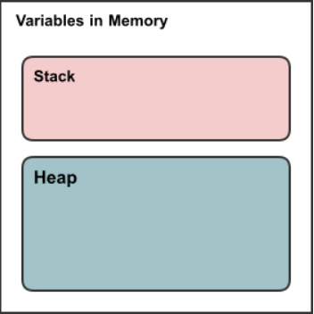

the increment operator ++ increases the value of a variable by 1. Similarly, the decrement operator -- decreases the value of a variable by 1. They can be used as prefix or postfix. * Example:
c++ int a = 3; a++ // a increases by one, so a = 4 a-- // a decreases by one, so a = 3 };
if we use ++ as a prefix (++a), the value of a is incremented by 1 then used.
if we use ++ as a postfix (a++), the value of a is used first then incremented by 1.
```c++ #include
using namespace std;
int main() { int var1 = 5, var2 = 5;
// var1 is displayed // Then, var1 is increased to 6. cout << var1++ << endl;
// var2 is increased to 6 // Then, it is displayed. cout << ++var2 << endl;
return 0; } }; ``` * Try to solve Example:
```c++ #include
using namespace std;
int func(int a,int b,int c){ int sum = ++a + b-- - c; return sum;
} int main() { int x = 5, y =3;
int sum = (x++) + y + x; // sum = ? cout<
Pointers are variables that store the memory addresses of other variables. For any
variablewe can have its address by&variable.
```c++ #include
int main() { // declare variable int var1 = 3; int var2 = 5;
// print address of var1
cout << "Address of var1: "<< &var1 << endl;
/ print address of var2
cout << "Address of var2: "<< &var2 << endl;} ``You will see an output that begin with0xwhich indicate the address of the variable in the memory. **notice:**int` variable has a size of 4 byte in a 64-bit operating system.
```c++ // pointer declaration int* ptr; // or int *ptr
// assigning address to pointer int* ptr; int var; var = 10; ptr = &var;
//accessing the value of the ptr (also called dereferencing) cout<<"ptr:"<*ptr has a value and &var is an address so we cannot write *ptr = &var.
ptris an address andvarhas a value so we cannot writeptr = var___
everything in our program is stored in the memory of our machine. lets have a peak on what happens on the memory when we try to declare a variable.
alt text
the memory in the machine can be devided into 2 places called the
stackand theheap, each of them has its advantages and disadvantages. lets dive into some details. 
so far, all the variables we declared was stored ( allocated) on this part of the memory. ```c++ int x =5; bool y = true; // these are allocated on the stack
``> the stack also stores functions. whenever we make a function call, a space on the stack is allocated for this function, this space is called a stack frame. the stack stores these functions in aLIFOmanner (Last in first out), so if we call a function , then call another function inside it, the latter gets executed when it's called, and when it's done, the stack continues the first function.  ### Advantages and disadvantages of stack: > the stack hasautomaticmemory managment, which means it automatically deletes variables when they go out of scope, so, A programmer does not have to worry about memory allocation and deallocation of stack variables. additionally, The allocation happens oncontiguousblocks of memory, which makes the access timefaster. ___ >disadvantages of stack is that its memory islimited. and wecan not change the size of an arraythat is on the stack while the program isrunning`.
the heap (also called the free store) is a part of the memory accessible only using pointers. to allocate memory on the heap we use the
newoperator. ### Advantages and disadvantages of heap: advantages: the heap can offermore memorythan the stack. wecan specify the size of arrayson the heap while the program isrunning. --- disadvantages: the heap memory allocation must be donemanually, which may cause memory leaks. the allocation happensrandomlyin any place of the heap.
alt text
new operator.```c++ #include
int main() { //example 1 int *int_ptr = nullptr; cout<
void swap(int* x, int* y) { int temp = x; x = y; y = temp; }
int main() { int x = 10, y = 20; swap(&x, &y); cout << x << " " << y << endl; return 0; } ``` 2. Accessing array elements. Compiler internally uses pointers to access array elements. 3. To return multiple values (e.g. returning square and square root of numbers or returning an array) 4. Dynamic memory allocation : We can use pointers to dynamically allocate memory. The advantage of dynamically allocated memory is, it is not deleted until we explicitly delete it.
There are a lot of other applications for pointers, but we will not cover it in this course.
```c++ // C++ program to dynamically allocate an array of given size. #include
int* createArr(int n) { return new int[n]; }
int main() { int* pt = createArr(10); return 0; } ```
Pointers can store address of cells of an array. Array is a static pointer. c++ int *ptr; int arr[4] = {1, 2, 3, 4}; // address of the first element of the array is stored in the pointer ptr ptr = arr; // or ptr = &arr[0]; Here the pointer points to the address of the first element of the array.
Navigation through the array using pointers ```c++ int *ptr; int arr[4] = {1, 2, 3, 4}; ptr = arr; // printing address of array elements using pointers for (int i = 0; i < 4; ++i) { cout<< "ptr + " << i << "=" << ptr + i << endl; //printing address of array elements // cout<< "&arr[" << i << "] = " << &arr[i] << endl; }
// printing values of array elements using pointers for (int i = 0; i < 4; ++i) { cout<< "(ptr + " << i << " ) =" << (ptr + i) << endl; //printing values of array elements // cout<< "arr[" << i << "] = " << arr[i] << endl; }
cout << arr << endl; cout << arr +1 << endl; cout << arr << endl; cout << arr+1 << endl; cout << *(arr+1) << endl;
```
If we initialize
ptr = &arr[1]we will haveptr - 1 is same as &arr[0]
ptr + 1 is same as &arr[2]
ptr + 2 is same as &arr[3]
```c++ #include
int main() { int arr[5];
// Insert data using pointer notation cout << "Enter 5 numbers: "; for (int i = 0; i < 5; ++i) { // store input number in arr[i] cin >> *(arr + i) ; }
// printing data using pointer notation
cout << "Array elements: " << endl;
for (int i = 0; i < 5; ++i)
{
// print value of arr[i]
cout << *(arr + i) << endl ;
// *(arr++) will give an error as it mean changing the array address which is the first element
// *(ptr++) is normal operation
}
return 0;} **notice** we did not declare a pointer, but instead we used the array name for the pointer notation.\ To see what is wrong with arr++ we use a simplified example:c++ int a = 0; cout << a+1 << endl; // output: 1 but a is still holding value of 0 in the memory cout << a++ << endl; // output: 1 but a now hold a value 1 in the memory
```
C++ does not allow to pass an entire array as an argument to a function. However, You can pass a pointer to an array by specifying the array's name without an index.
If you want to pass a single-dimension array as an argument in a function, you would have to declare the function in one of following three ways and all three declaration methods produce similar results because each tells the compiler that an integer pointer is going to be received. > void Fun(int *arr) { ..... } // as a pointer
void Fun(int arr[10]) { ..... } // as sized array
void Fun(int arr[]) { ..... } // as unsized array
```c++ #include
double getAverage(int arr[], int size) { int i, sum = 0;
double avg;
for (i = 0; i < size; ++i) { sum += arr[i]; } avg = double(sum) / size;
return avg; }
int main () { // an int array with 5 elements. int balance[5] = {1000, 2, 3, 17, 50}; double avg;
// pass pointer to the array as an argument. avg = getAverage( balance, 5 ) ;
// output the returned value cout << "Average value is: " << avg << endl;
return 0; } ``` ## Passing Arguments To Function
We can pass actual value to the function, pass the address of the value, or passing a reference to the function. Each has a different methadology and application. c++ int var1 = 5; int var2 = 10 int *ptr; ptr = &var1; // pointer has the address of var1 int &ref = var1; // now var1 and ref has the same address ptr = &var2; // pointer addres can follow each variable it is assigned to, but refrence are assigned to one variable only
We pass a copy of the value when we did not want to change the actual value of the variable ```c++ void passByVal(int val) { val = 10; cout<< "val = " << val; } int main() { int x = 5; cout<< "x = "<< x << endl; //5 passByVal(x); cout<< "x = "<< x << endl; //5
} ```
we are passing the address of the variable. ```c++ void passByPtr(int ptr) { ptr = 20; cout<< "ptr = " << ptr; int main() { int x = 5; cout<< "x = "<< x << endl; //5 passByPtr(&x); //20 cout<< "x = "<< x << endl; //20
} ```
we pass the actual value of the variable.
pass by refrence VS pass by pointer
References are usually preferred over pointers whenever we don’t need “reseating”.
Use references when you can, and pointers when you have to.
A refrence is same object with a different name. Reference must refere to an object and cannot be NULL so it is safer to use. * pointers can be re-assigned, reference cannot. * pointers can be null(a constant with a value of zero ). It is a good practice to initiallize a pointer as null. * pointers can iterate over an array. * pointer is a variable that hold memory address, reference has the same memory as the object . * pointers need to be dereferenced to acces the memory while the reference can be used directly.
```c++ void passByRef(int &ref) { ref = 30; cout<< "ref = " << ref; } int main() { int x = 5; cout<< "x = "<< x << endl; //5 passByRef(x); //30 cout<< "x = "<< x << endl; //30
} <!-- ### Pass by pointer reference <a name="pass-pr"></a> we are making a reference to the pointer. Thus we want to modify the pointer without modifying the object that the pointer is pointing to.c++ int n1 = 1; int n2 = 2; int* p2; void passByPtr(int ptr); void passByPtrRef(int &ptrRef); int main(){ int* p1 = &n1; p2 = &n2; passByPtr(&n1); passByPtrRef(p1); return 0; } void passByPtr(int p1) { ptr= 3; ptr= p2; *ptr = 4; cout<< "pass by pointer"<< endl; }
void passByPtrRef(int &ptrRef) { ptrRef = 5; ptrRef = p2; *ptrRef = 6; cout<< "pass by pointer reference"<< endl; } ``` here -->
This session is prepared and managed by Mohamed Ahmed Abdelaziz and Ammar Elsaied.
Having trouble with Pages? Contact Us Mohamed.ahmed997@eng-st.cu.edu.eg Mohamed.ahmed997@eng-st.cu.edu.eg and We will help you sort it out.